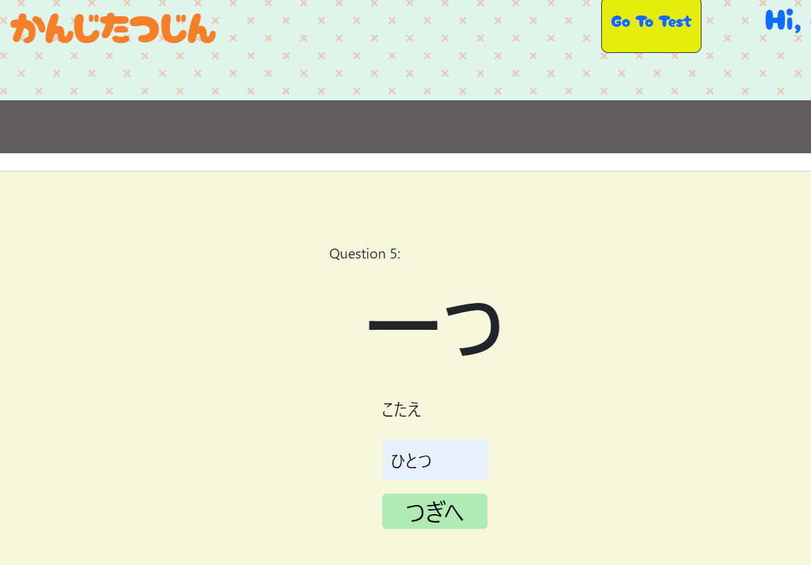
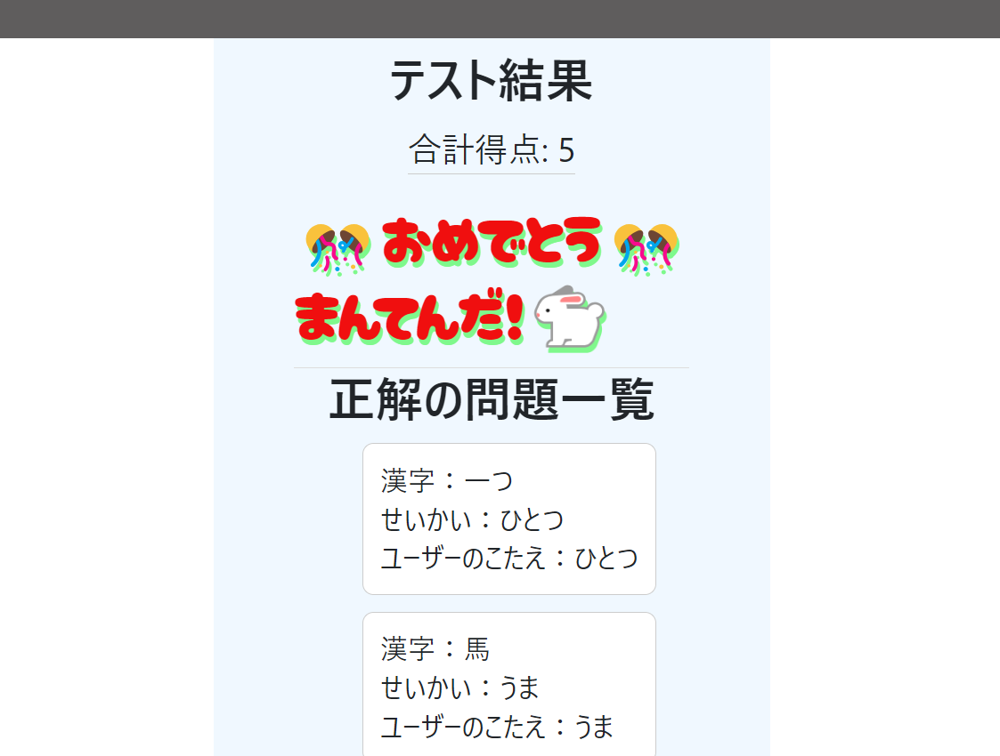
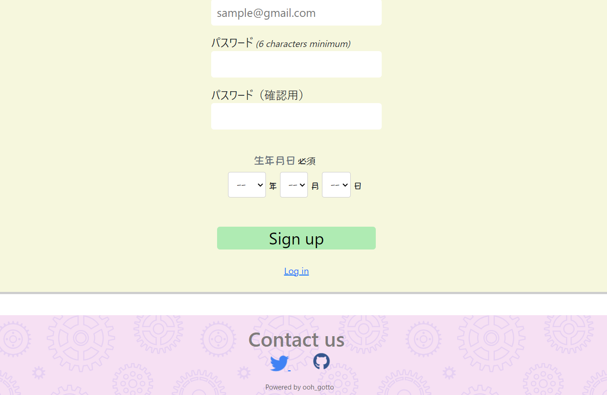

KANJIWHIZ（かんじたつじん）

開発環境
Ruby / Ruby on Rails / MySQL / GitHub / Render.com / Visual Studio Code / Boostrap / JavaScript
-
概要
制作時間 60時間 URL https://kanjiwhiz.onrender.com/ ID admin PASS 2345 -
動作テスト
テスト用アカウント
mail ooh@test.com PASS t456789
OUTLINEアプリケーションの概要
オリジナルアプリケーションとして、小学1年生の息子に楽しく漢字を勉強してもらいたいため、開発しました。
主な機能は、ユーザー登録機能、ユーザーの情報編集、および、テスト（答えを投稿）機能です。管理者のみで、問題（漢字）の作成、及び、削除可能です。
トップページの枠の端をクリックすると、画像をスライドさせる「カル－セル」を取り入れました。左右にスライドして、画像を入れ替えることにより、利用者に楽しく取り組んでもらえることを目的にしました。
Go To Test を押すと、テスト開始、ひらがなの読み方を記入します。1回のテストは5問です。
テスト終了時に、結果と点数を出すことにより、ユ－ザ－に達成感を味わってもらえるようにしました。 そのため、満点を取った時に「おめでとう」の表示ができるよう機能を追加実装することにしました。
-
開発に至った経緯
家族の中で、「小学1年生の息子に楽しく漢字を勉強してもらいたい」という考えがありました。。
課題を分析し、「できる限り簡単に取り組めるようにする」ことを考え、小学生低学年でも使えるアプリを開発することにしました。漢字を見て、読み方を解答欄に記入する様式にし、途中で集中力が切れないようにするため、1回のテストは5問にしました。
結果画面で、正解と合計得点が表示されることにより、自分の達成感を感じられるようにしました。問題(漢字)は、親が管理者とすることにより、漢字レベルを調整することができます。
-
開発で工夫したこと
 トップペ－ジに小学生でも親しみやすいような画像を取り入れた。「勉強」「漢字」というマイナスイメ－ジを持っている小学生が多いため、アプリを開いた時、少しでも興味を持ってもらえるように可愛い画像を取り入れることにした。また、トップペ－ジのスライドができる「カル－セル」を使用することにより、アプリを開くことに興味を持ってもらえるようにした。
1回のテストを5問にすることにより、集中力を切らすことなく、持続性を持って取り組んでもらえるようにした。また、重複しないでランダムに漢字が出るよう、コントローラーのアクション内に問題を5問出力し、ユーザーの5回の解答を配列に保存し、さらに、ロジックifを利用して5問全て出たら、結果画面に遷移されるという流れを実行した。その工夫により、毎回、違う漢字が出力され、何度も違う漢字に挑戦することができるようになった。 解答欄に、ひらがな以外の文字（カタカナ、ロ－マ字など）が入力されると、エラ－メッセ－ジが出るようにし、正しく入力してもらえるよう促すことにした。
テスト終了時に、結果と点数を出すことにより、ユ－ザ－に達成感を味わってもらえるようにした。 そのため、満点を取った時に「おめでとう」の表示ができるよう機能を追加実装することにした。
管理者登録をすることにより、漢字の種類やレベルの調整ができ、また、漢字の削除機能を追加したことにより、誤入力した場合、いらない漢字を整理したい場合などに役に立てるようにした。上記の工夫をすることにより、ユ－ザ－にとって、使いやすく楽しいアプリになったと考えられる。
-
今後実装したいと思っていること
新規登録をするの際に便利に登録できるように、今後は、SNSアカウントを使用してログインできる機能を追加する予定です。